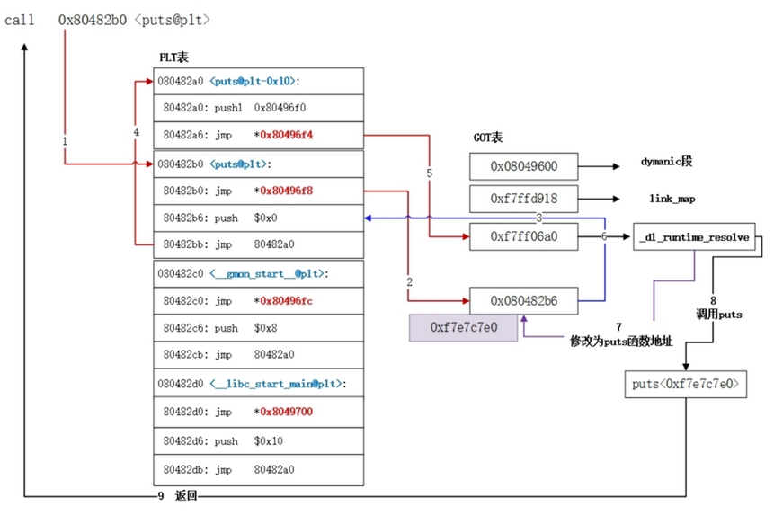
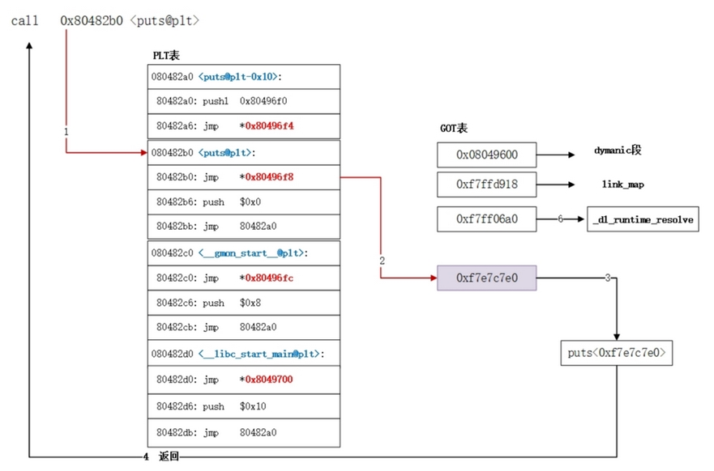

PLT表和Got表的联系
前言
本篇主要分析PLT表和Got表的联系以及绑定延迟技术
前言
为了更好的用户体验和内存CPU的利用率，程序编译时会采用两种表进行辅助，一个为PLT表，一个为GOT表。
一：PLT表和Got表的联系
1.1：PLT表
PLT(Procedure Linkage Table)：过程链接表
PLT表的作用是将位置无关的符号转移到绝对地址。当一个外部符号（函数）被调用时，PLT去引用GOT中的其符号（函数）对应的绝对地址，然后转入并执行。
1.2：Got表
GOT(Global Offset Table)：全局偏移表
GOT是一个存储外部库函数的表，got表用于记录在ELF文件中所用到的共享库中符号(函数)的绝对地址。即GOT表中是一个函数真正的地址。在程序刚开始运行时GOT表项是空的，当符号第一次被调用时会动态解析符号（函数）的绝对地址然后转去执行，并将被解析符号（函数）的绝对地址记录在GOT中，第二次调用同一符号（函数）时，由于GOT中已经记录了其绝对地址，直接转去执行即可，不用重新解析。
1.3：PLT表和Got表之间的联系
GOT表项中的数据才是函数最终的地址，而PLT表中的数据又是GOT表项的地址，通过PLT表跳转到GOT表来得到函数真正的地址。因此plt表相当于调用函数的一个跳板。
1.4：函数第一次被调用的过程
第一步由函数调用跳入到PLT表中，然后第二步PLT表跳到GOT表中，可以看到第三步由GOT表回跳到PLT表中，这时候进行压栈，把代表函数的ID压栈，接着第四步跳转到公共的PLT表项中，第5步进入到GOT表中，然后_dl_runtime_resolve对动态函数进行地址解析和重定位，第七步把动态函数真实的地址写入到GOT表项中，然后执行函数并返回。可以看到函数第一次调用时开销较大
注：
- dynamic段：提供动态链接的信息，例如动态链接中各个表的位置
- link_map：已加载库的链表，由动态库函数的地址构成的链表
- _dl_runtime_resolve：在第一次运行时进行地址解析和重定位工作
1.5：函数的第二次被调用的过程
第一步还是由函数调用跳入到PLT表，但是第二步跳入到GOT表中时，由于这个时候该表项已经是动态函数的真实地址了，所以可以直接执行然后返回。
二：plt延迟绑定技术
前言
动态链接速度损耗的原因是：
- 对全局和静态的数据访问都要进行复杂的GOT定位，然后再间接跳转寻址
- 动态链接的很多工作是在程序运行时完成的，动态链接器需寻找并装载目标共享对象、符号查找、地址重定位等，如果不加以优化，会出现程序启动过慢的情况。
2.1通过plt实现动态链接延迟绑定
延迟绑定PLT（Procedure Linkage Table）在GOT表基础又做了一次间接跳转。即模块内关于外部函数的地址引用，这下并不直接通过GOT跳转，而是通过一个叫做PLT项的结构来进行，每个外部函数引用都对应PLT表中的一个表项，而PLT中的每一个表项都对应GOT表中的每一个表象。
通过延迟绑定技术实现了在第二次调用该函数时，节省了内存和运行速度